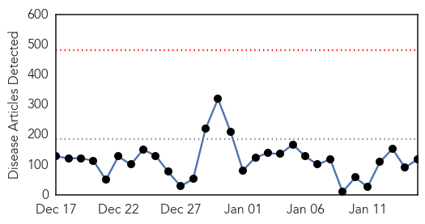
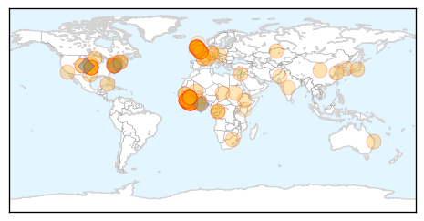
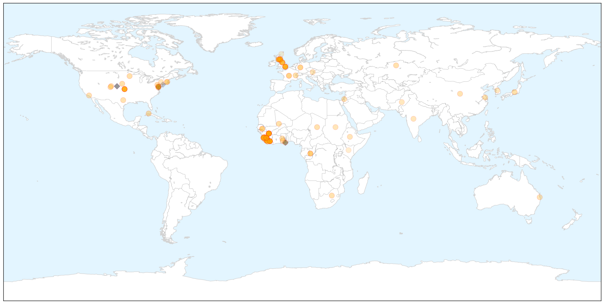

Ebola
30-Day Web Trend
0 alerts, 0 warnings

30-Day Twitter Trend
0 alerts, 0 warnings

Article Locations

X

Article Confidences

Top Articles:
- 1.000
- Flu and norovirus and Ebola, oh my!
- 1.000
- American Ebola Survivor Dr. Richard Sacra Headed Back to Liberia
- 1.000
- Liberia, Sierra Leone, Guinea making Ebola strides
- 1.000
- Ebola virus: number of new cases on the decline in Africa
- 1.000
- Telluride Daily Planet: News
- 1.000
- 14 Takeaways From The 14-Part WHO Report On Ebola : Goats and Soda : NPR
- 1.000
- Suspected UK Ebola case: Person rushed to hospital after returning from West Africa with fever
- 1.000
- Ebola in the UK: Suspected Ebola patient treated in Scotland
- 1.000
- Ebola in Scotland: Patient from Fife under investigation as suspected second case of deadly disease
- 1.000
- WHO looks back on year-long Ebola battle
- 1.000
- uprisingradio.org Are We Finally Winning the War on Ebola?
- 1.000
- 14 Takeaways From The 14-Part WHO Report On Ebola
- 1.000
- Ebola virus spread slows down: WHO
- 0.999
- Ebola spread slowing in hard-hit countries: WHO
- 0.999
- Red Cross nurse dies of Ebola in Sierra Leone
- 0.999
- Edinburgh hospital woman tests negative for Ebola
- 0.999
- UN Ebola czar says epidemic has 'passed the tipping point'
- 0.999
- Man tests negative for Ebola in Edinburgh
- 0.999
- Man tests negative for Ebola in Edinburgh
- 0.999
- Ebola spread slowing in hard-hit countries: WHO
- 0.999
- Ebola tests in Edinburgh for patient who recently returned from west Africa
- 0.999
- Ebola tests in Edinburgh for patient who recently returned from west Africa
- 0.999
- UN Reports Ebola Cases in West Africa Fall to Lowest Levels in Months
- 0.999
- Ebola outbreak in West Africa appears to be slowing down: U.N.
- 0.998
- UN Ebola czar says epidemic has 'passed the tipping point', news, Health News, AsiaOne YourHealth
- 0.998
- Suspected Ebola case in Britain tests negative
- 0.998
- U.N. Ebola czar says epidemic has 'passed the tipping point'
- 0.998
- Ebola outbreak in West Africa appears to be slowing down - U.N.
- 0.998
- UPDATE 2-Ebola outbreak in West Africa appears to be slowing down -U.N.
- 0.998
- Liberia aims to be Ebola-free by end-February as cases fall to 10
- 0.998
- UPDATE 2-Ebola outbreak in West Africa appears to be slowing down -U.N.
- 0.997
- Ebola outbreak 'slowing down' in West Africa
- 0.997
- Second suspected Scots Ebola case patient currently being tested
- 0.997
- Hospital testing patient for Ebola
- 0.997
- President Koroma predicts Ebola-free Sierra Leone by May
- 0.996
- Patient suspected of suffering from Ebola tested at Northampton hospital
- 0.995
- One Year Into the Ebola Epidemic, WHO Publishes 14 Papers Providing Insights
- 0.995
- UN special envoy Nabarro sees Ebola outbreak ′slowing down′
- 0.995
- Woman Tests Negative For Ebola In Northampton
- 0.994
- UN: At least 50 Ebola hotspots remain, but new cases falling
- 0.994
- Traditional healers sensitized on Ebola fever
- 0.994
- UN: At least 50 Ebola hotspots remain, but new cases falling
- 0.993
- As anxiety wanes, Minnesota keeps eyes out for Ebola spread
- 0.992
- IFRC deeply saddened by loss of Red Cross staff member to Ebola
- 0.991
- British hospital says has suspected Ebola case
- 0.988
- US doctor to return to Liberia after Ebola recovery: 'I need to give something back'
- 0.988
- Patient tested for ebola in Edinburgh
- 0.987
- Cuban MD Who Recovered from Ebola Returns to Sierra Leone
- 0.986
- Stevenage medical technician flies to Sierra Leone to help fight Ebola virus
- 0.985
- Socio-Economic Impacts of Ebola in Sierra Leone: Sierra Leone News
Showing top 50 articles...
Top Tweets:
- 0.947
- Sara Hersey to be CDC’s first country director/ Sierra Leone. She recently led CDC Epi team in SL supporting Ebola response.
- 0.912
- Ebola Update: 21261 confirmed probable and suspected cases reported in 3 most affected countries with 8414 deaths. EbolaResponse
- 0.801
- WHO. 14 papers that take an in-depth look at West Africa’s first epidemic of Ebola virus disease http://t.co/0eppjQVjbh
- 0.722
- RT: Sierra Leone MOH Ebola Update Jan 15: 16 New Conf. Cases & 14 Susp.; 14 New Conf Deaths https://t.co/BV6vgj373Y
- 0.681
- RT: For the third consecutive day there are zero new Ebola cases in Liberia. Quite a milestone.
- 0.644
- Dr. Lise Martel to be CDC’s first country director/Guinea. She recently led team supporting Guinean MoH to est. 1st Ebola Call Center.
- 0.594
- RT: Ebola outbreak in Liberia could end by June if 85% of patients get hospital care http://t.co/sSRqQUhdyv via
- 0.573
- Ebola cases declining in West Africa http://t.co/6EVwKExtbB
- 0.521
- RT: One year into Ebola epidemic: a deadly tenacious and unforgiving virus - a WHO assessment http://t.co/XZM146AiSE